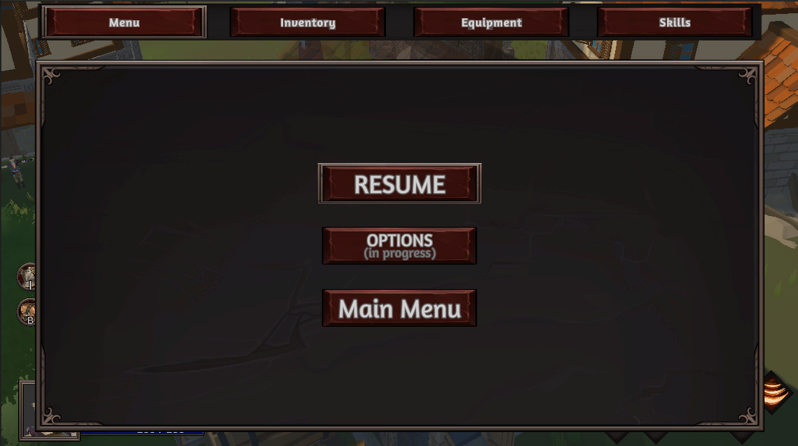
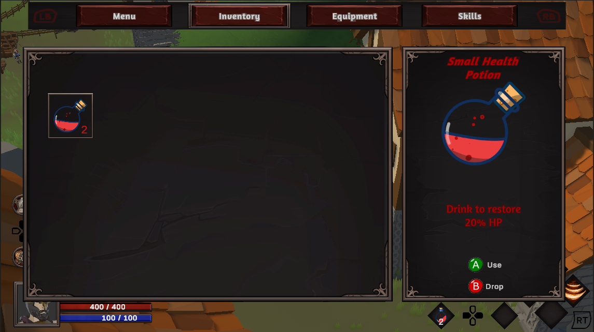
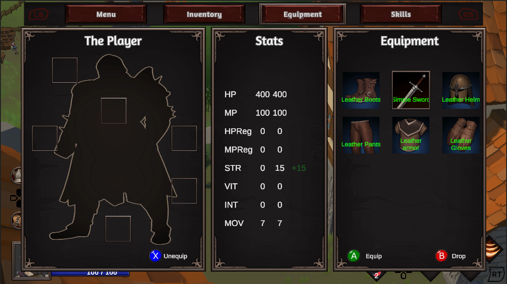
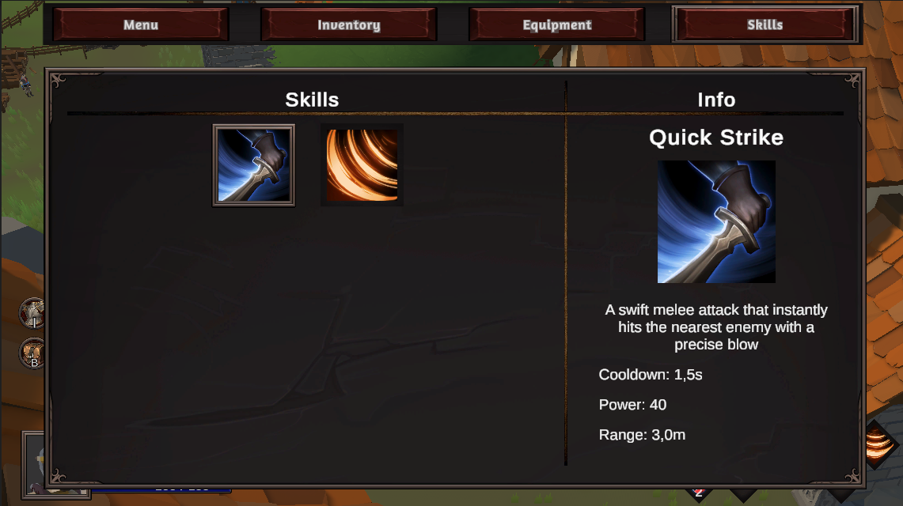
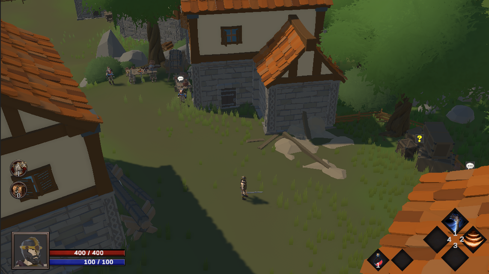
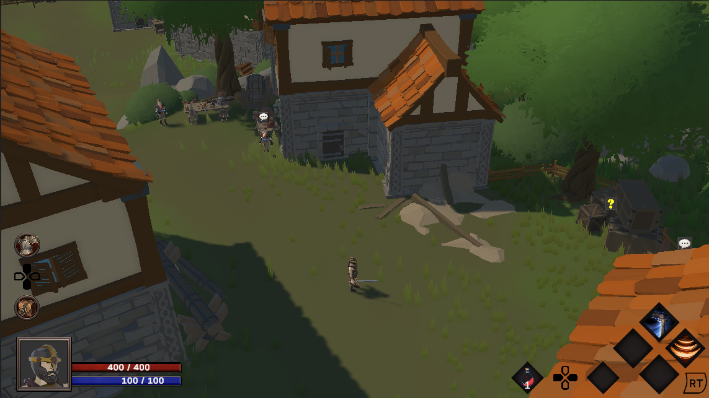
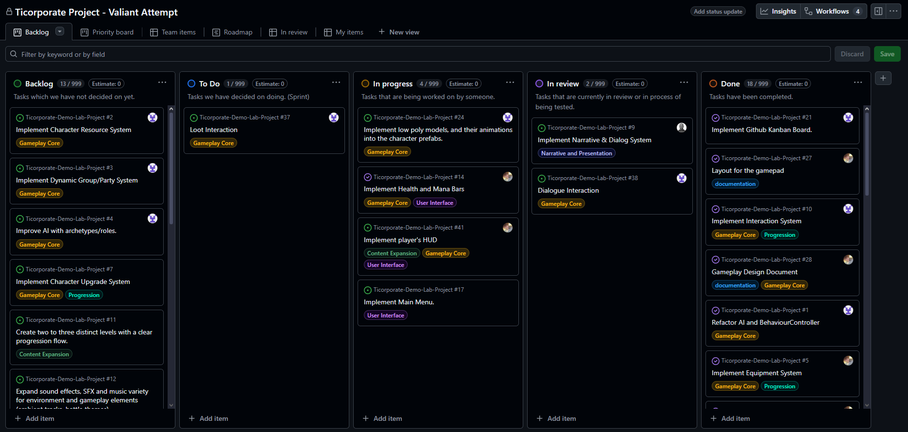

This portfolio documents my role, contributions, and learning outcomes during the TC course project.
The focus is on concrete responsibilities, delivered systems, collaboration within the group and reflection on personal development.
Roles
Implementation Lead
Responsible for coordinating implementation priorities and ensuring gameplay features progressed from planning to working systems.

In-game menu

Inventory menu

Equipment menu

Skills menu

Keyboard and mouse navigation

gamepad_ui
Kanban board

Kanban board snapshot
Learning Portfolio
Learning Goals
Improve gameplay systems programming
Develop robust UI systems for multiple input methods
Strengthen team coordination and delivery
Improve testing and balancing practices
Learning Outcomes
Better translation of design ideas into implementable systems
Improved integration planning and dependency management
Stronger understanding of UX impact through testing
Clearer documentation and communication
Reflection
Throughout the course, I maintained an active role in both technical delivery and team coordination.
I strengthened my systems programming skills while gaining practical experience in supporting a multidisciplinary team.
Supporting material:
Self-assessment notes
Technical contribution & ownership
I took clear ownership of core gameplay-supporting systems (input, UI, inventory, equipment, resources) and ensured they were functional, integrated, and testable
within the project timeline. I was able to deliver working systems consistently and support others in integrating their features with mine.
Workflow and implementation quality
My workflow improved during the course: I moved from implementing features in isolation to actively considering system boundaries and integration points earlier, which
reduced later merge issues and rework.
Communication and team interaction
I actively communicated progress, blockers, and technical constraints during weekly meetings and informal discussions. This helped align expectations between design, UI,
and implementation, especially when requirements evolved during development.
Problem-solving and adaptability
When encountering technical issues or integration conflicts, I focused on identifying root causes and proposing practical solutions rather than workarounds. I was able to
adapt my approach based on feedback from testing and peer input.
My biggest regret
Due to the workload, overlapping responsibilities, and time constraints, I relied on AI tools more than I would ideally prefer in order to complete all assignments and
fulfill my roles. While this supported delivery, it reduced opportunities for deeper independent exploration in some areas. In future personal and custom projects, I
intend to minimize AI usage and rely more on manual problem-solving to maximize learning
Feedback from peers
[Add feedback excerpt]
[Add feedback excerpt]
Quick Summary
Roles: Implementation Lead, Scrum Master, Systems & UI Programmer
Primary contribution: gameplay systems, UI, and team process
Strong focus on implementation, integration, and testing